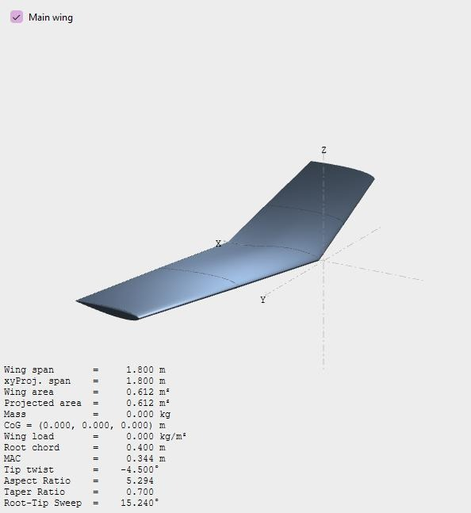
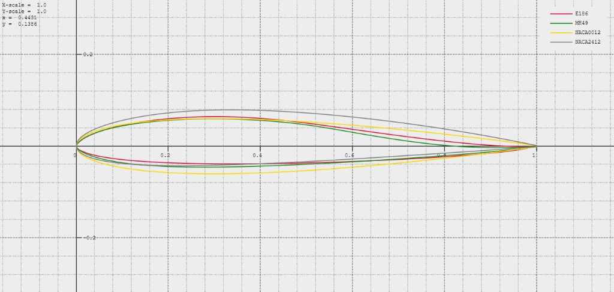

Tailless Flying-Wing UAV Design & BEM Propeller Matching
Aerodynamic sizing, reflexed airfoil trade study (E186 & MH49 vs. NACA 0012 / 2412), vortex-lattice stability analysis in AVL, and multi-operating-point blade element momentum (BEM) propeller-motor matching.
Tailless Flying-Wing Trim & Stability
Without a horizontal tailplane, a flying-wing UAV must achieve positive pitch stiffness (Cmα < 0) and a positive zero-lift pitching moment at cruise (Cm0 > 0) purely through planform sweep, geometric washout, and reflexed airfoil camber.
The reference geometry combines a 15.24° root-to-tip sweep and −4.50° geometric tip washout with reflexed flying-wing sections (Eppler E186 and Martin Hepperle MH49 benchmarked against baseline NACA 0012 and NACA 2412 profiles), analysed in AVL using viscous section polar data and exported as buildable STEP AP242 geometry.
Main Wing Specification
- Wingspan1.800 m (projected span 1.800 m)
- Wing Area0.612 m² (projected area 0.612 m²)
- Root Chord & MAC0.400 m root chord · 0.344 m MAC
- Aspect & Taper RatioAR 5.294 · Taper ratio 0.700
- Sweep & Tip Twist15.240° root-tip sweep · −4.500° tip washout
- Discretisation960 structured quad panels · STEP AP242 CAD export
VLM Panel Mesh, 3D Surface & Reflexed Profiles


